You have just finished playing Petronella. What follows are notes on the places and objects you have interacted with.
The Name
In 1942 our main character Petronella is born. In Eindhoven in that year Petronella was the fifth most popular name given to a baby girl. The sixth was Elisabeth.[1]. Before starting working on this story I had never encountered the name Petronella and thus it became the name of the story itself.
The Edmondson Card
Introduced in the Netherlands in 1857, the Edmondson card served as the country's primary train ticketing system. Paper tickets on the dutch railways remained in use until 1982.[2]
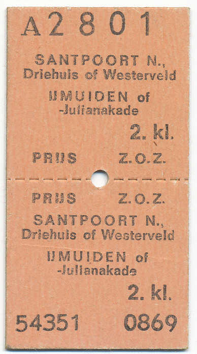
Example Edmondson train ticket [3]
The T65 Telephone
The T65 was introduced in 1965 as the standard telephone installed across the Netherlands by the PTT — today known as KPN.[4] Because the model was offered for free if you took a subscription with PTT, nearly the entire country was calling with this phone throughout the seventies and eighties.
The original phone was grey. Colour models were not introduced until seven years later. The blue phone used in the story is thus factually inaccurate. If you search for this model, T65, you will also find versions with pressable buttons instead of the rotary dial. This version was introduced in 1980. The rotary dial could simply be converted to pressable buttons by the user at home.[5]
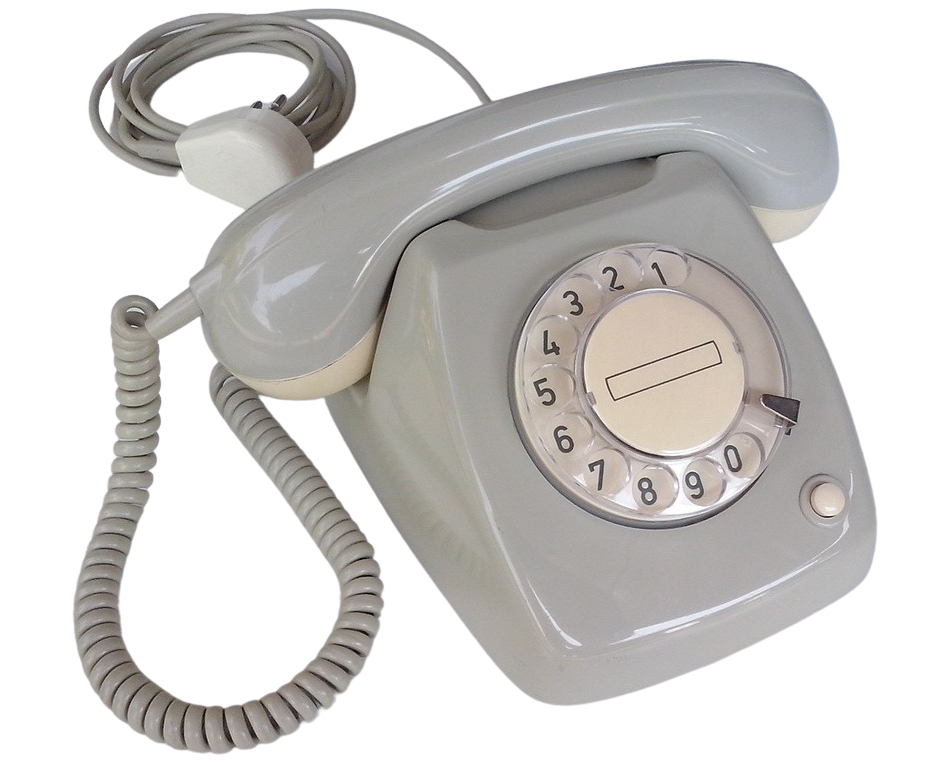
T65 telephone, standard model, 1965
La Ville Fumée
Another forgotten nickname of Eindhoven was la ville fumée — the smoky city. In 1950 there were 45 active cigar factories in Eindhoven. Most were small operations employing predominantly women. Three large companies dominated: Mignot & De Block (founded 1858), Van Gardinge (1861), and Henri van Abbe — later renamed Karel I (1908).
After the Second World War, cigars became more expensive due to shortages of raw materials, and cigarettes grew in popularity. By 1963, only five cigar companies remained operational in Eindhoven. By 1969, Karel I and Mignot & De Block had both been acquired, marking the end of cigar production in the city.[6]
Mignot & De Block produced other goods alongside cigars, among them the rolling paper Mascotte — still in production today. The company no longer occupies the vast factory it once ran beside the Demer, though it hasn't dissapeared and is still registered in Eindhoven. You have likely seen the Mascotte adverts on the street without knowing the connection.
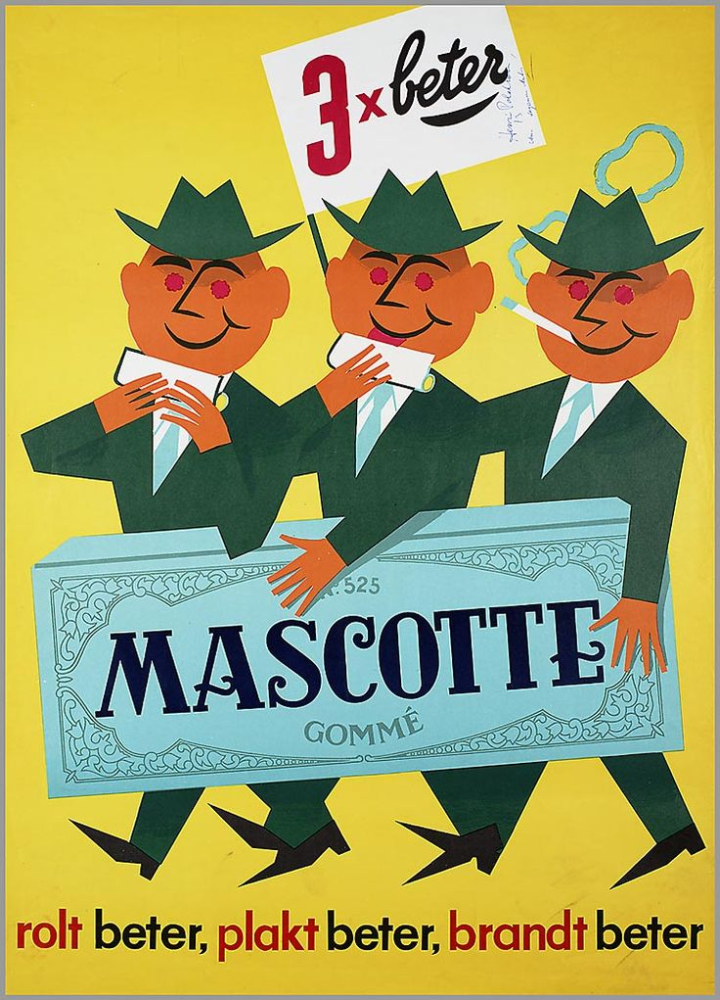
Mascotte rolling paper old advertisement
The Xerox Machine
The first commercial photocopier, the Xerox 914, was released in 1959.[7] The name comes from the Greek for "dry writing" — emphasising the absence of liquid processes used by earlier methods.
In the story, both characters used it: Petronella to copy the map, Willy for the paper he repurposed for his letters — printed commercial posters from Mignot & De Block and newspapers from 1965.
The map Petronella photocopied is a real publication from 1965 and can be consulted at the library of Eindhoven in Beeld. Why the city hall does not appear on it — despite still standing in 1965 — remains a mystery to me.
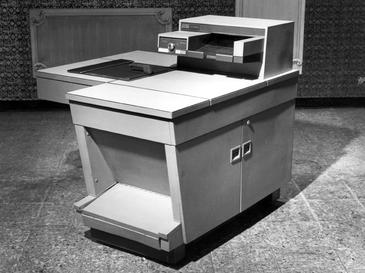
Xerox 914, the first commercial photocopier, 1959
The Public Reading Room
The first public reading room in Eindhoven opened on 1 May 1916 at Nieuwstraat 6, in a space described at the time as an "alcohol-free room" above a wine merchant's cellar. It was the thirty-second reading room to open in the Netherlands, and a direct forerunner of the public libraries we know today.[8]
De oprichting vond plaats op 1 mei 1916 in het gebouw Nieuwstraat 6, waar een ruimte gevonden was in een "alcoholvrij lokaal" boven de wijnkelders van de heer Boex. Het was de 32e leeszaal die in Nederland was geopend.
The reading room visited during the story was the one of the Augustine friars. It opened in 1952 and closed in 2016. The collection of books were transferred to Tilburg University in 2017.[9]
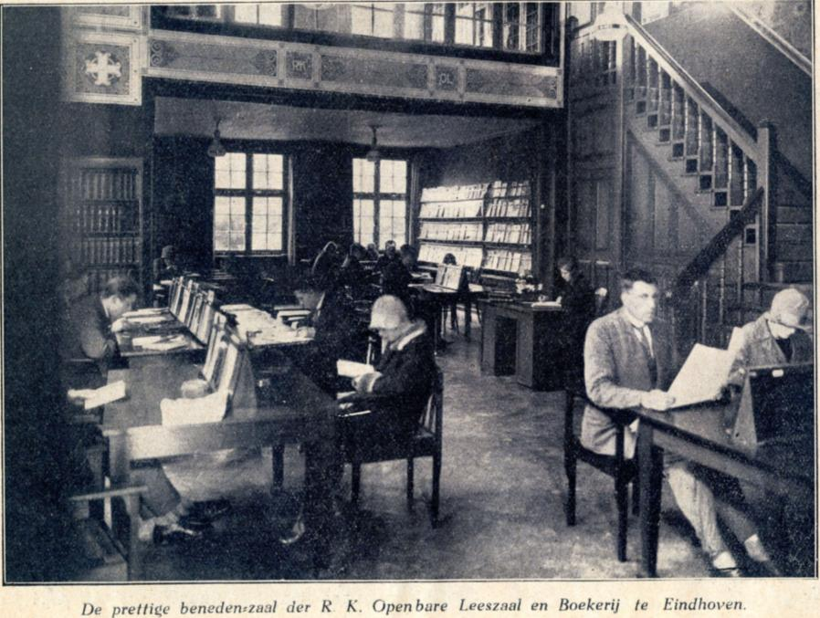
Reading room, Rechtstraat, Eindhoven
The Monastery of Marienhage
Around 1420, the Order of Sint Augustinus built the monastery Marienhage on the remnants of an old castle.[10] In 1954, a scientific reading room was opened within its walls.
In 2013, the Augustinians and the municipality of Eindhoven began exploring options for repurposing the complex. In 2017, the Augustinian priests left. DELA became the new owner and began the redevelopment of the site together with the municipality.[11]
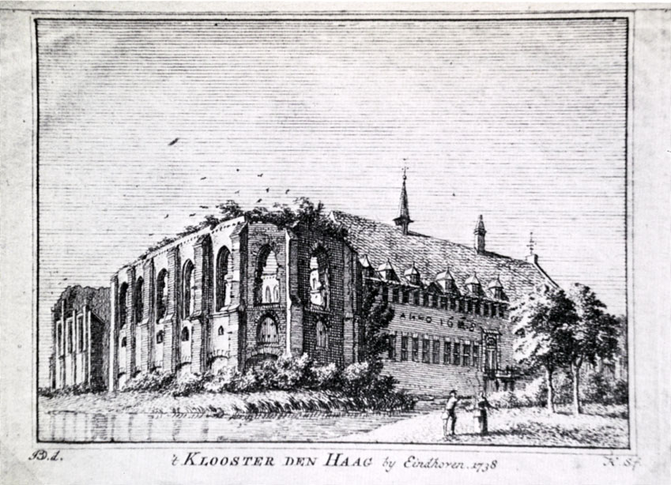
Drawing of Monastery of Marienhage in 1738, Eindhoven
DELA
DELA was founded in Eindhoven in 1937 with a mission to make dignified funerals available to everyone, regardless of social class. The acronym DELA stands for 'Draagt Elkanders Lasten' meaning carrying each others burdens.[12]
Iets Hogers
DELA commissioned the artist Maarten Baas to create the sculpture Iets Hogers — Something Higher — which stands in front of Marienhage. Its meaning: that it is rarely the great and spectacular moments that give life its significance, but the quiet, unexpected conversations that unfold around the kitchen table.[13]
Sculture Iets Hogers by Maarten Baas
Mies en Scène
The television programme you saw a fragment of was Mies en Scène, a Dutch talk show that aired from 1965 to 1969.[14] Its presenter, Mies Bouwman, is considered a legend of Dutch television — the undisputed queen of the medium.[15]
The segment featured was the so-called chair interview, in which Bouwman posed ten questions to a notable Dutch figure. The guest in this instance was Wim Sonneveld, who played Professor Higgins in the Dutch staging of My Fair Lady.
The broadcast was in black and white. The first colour television set produced by Philips appeared in 1964 — and it is that model which appears in the story.[16]
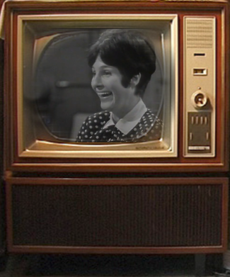
Mies Bouwmans on a Philips colour television, 1964 model
The City of Lights
Eindhoven's original claim to the name City of Lights had nothing to do with Philips. It referred instead to its status as a lucifer city. The largest match manufacturer, Mennen & Keunen, was founded in Eindhoven in 1870. The abundance of poplar wood — used for match sticks — and available cheap labour made it an ideal location. Their product was called the Molenlucifer, named for the windmill printed on every box.[17]
Production of the Molenlucifer ended in 1979, marking the end of match manufacturing in the Netherlands entirely.
A note on terminology: "Lucifer" was the early name for friction matches in the 1830s–1850s, and was not considered particularly safe. The safer safety match — a Swedish invention — is more commonly called a "match" in English. In Dutch, however, lucifer simply means match. The Dutch term is maintained throughout the story.
The Compact Cassette
The first prototype of the compact cassette was developed in 1963 by Lou Ottens, a Dutch engineer working for Philips at their site in Hasselt, Belgium. It was presented to the public for the first time at the Internationale Funkausstellung (IFA) in Berlin that same year together with the Philips EL 3300, a device that could record and play back audio.[18]
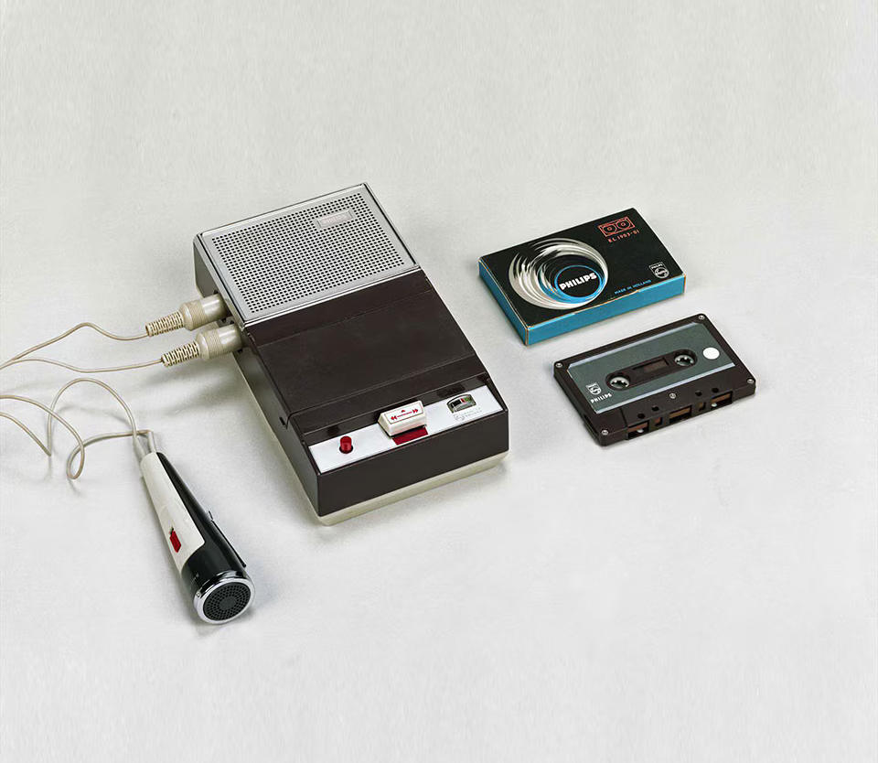
Philips EL 3300 cassette recorder
Constant and New Babylon
In 1956, Dutch artist Constant Nieuwenhuys began work on New Babylon — a proposal for a city in which machines would perform all necessary labour. The human being, freed from work, would wander, play, and create. He called this liberated figure the homo ludens.[19]
The 1965 exhibition at the Haags Gemeentemuseum — Constant: schilderijen, plastieken, New Babylon — ran from 2 October to 22 November 1965, bringing together paintings, sculptures, and the New Babylon project.[20]
His ideas remain as relevant as ever, as cities expand upward and the nature of human work shifts continuously through technological change.
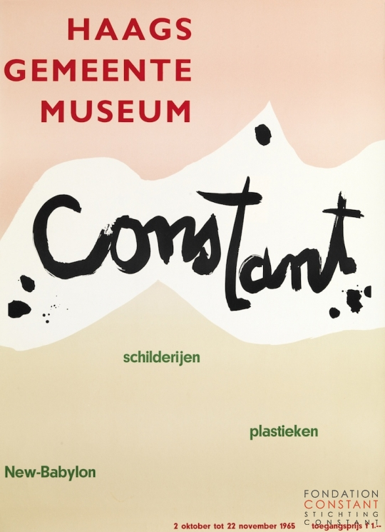
Poster exhibition Constant Nieuwenhuys — in den Hague in 1965"
Depending on your path — you may or may not have encountered the following
The Cinemas
All three films referenced in the story played in Eindhoven cinemas in 1965 — though their locations have been swapped. My Fair Lady was screened at the Metropole; today, you will find the cinema Pathé there.
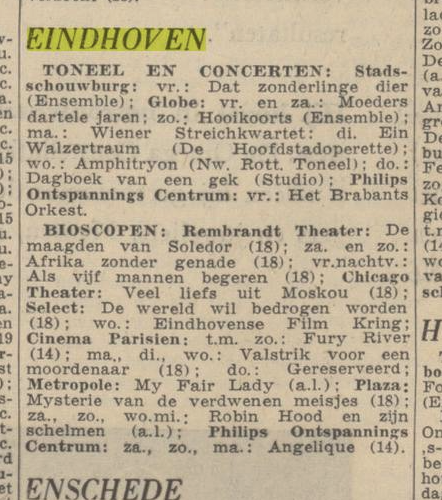
Film programme, Eindhoven, 1965
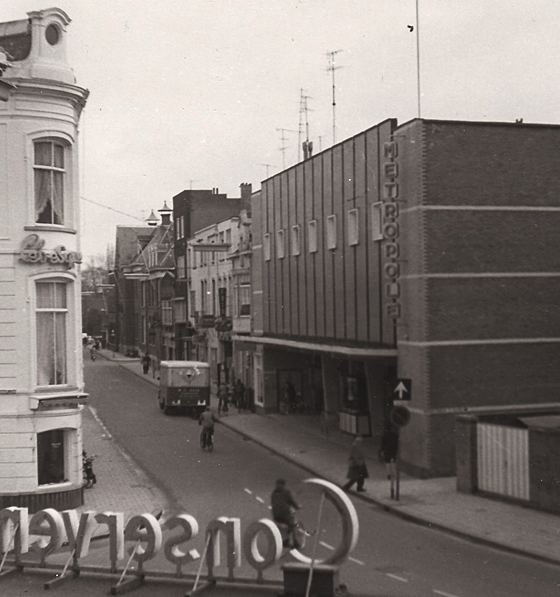
Cinema Metropole, Eindhoven
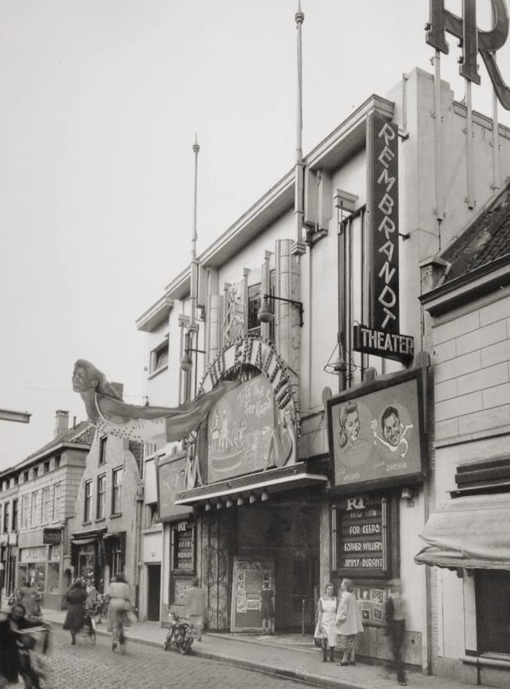
Cinema Rembrandt Theater, Eindhoven
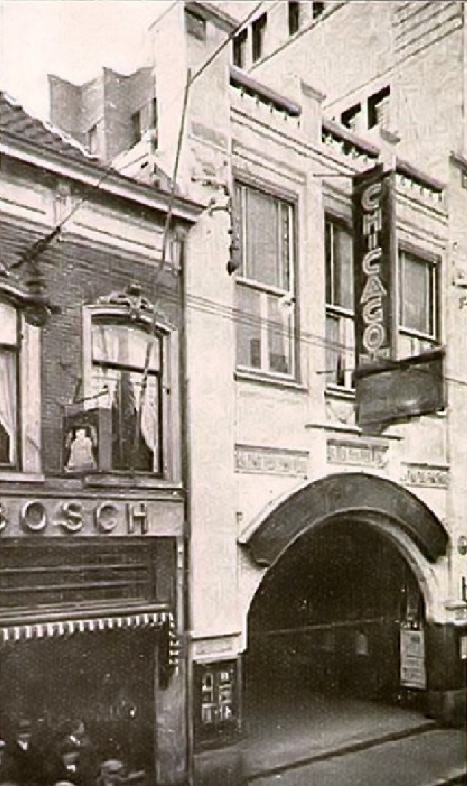
Cinema Chicago, Eindhoven
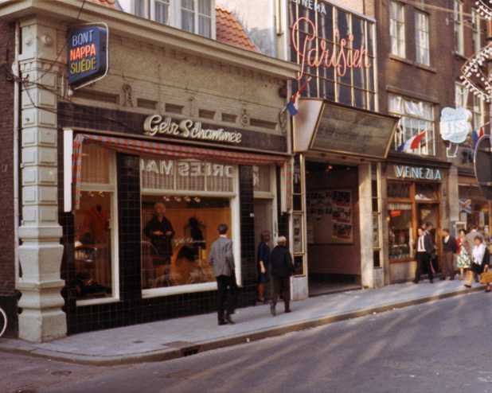
Cinema Parisien, Eindhoven
The film referenced on the cassette is the original 1931 production of Mädchen in Uniform, not the 1958 remake.[21]
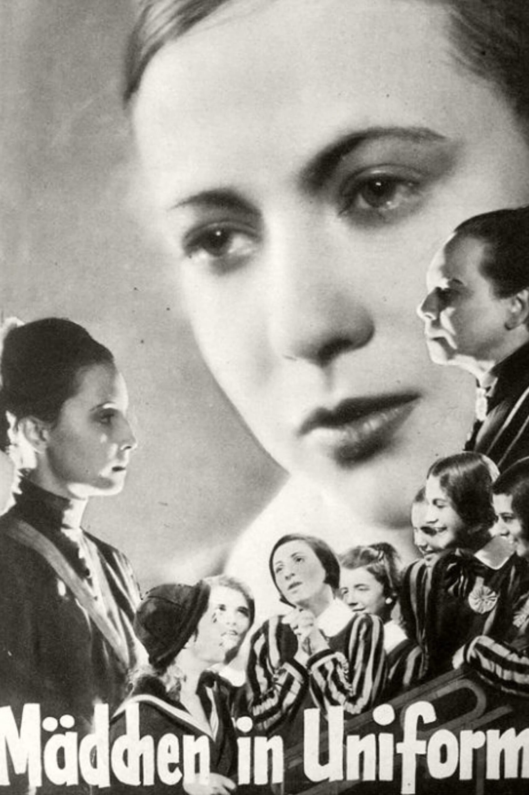
Mädchen in Uniform, 1931 — original film poster">
Mädchen in Uniform, 1931 — original film poster
ETOS
ETOS was founded in 1919 under the name Philips Coöperatieve Verbruiksvereeniging. Its purpose was to provide Philips employees with basic goods — bread, salt, and other necessities. It was founded after Philips observed that each wage increase was absorbed by rising prices by surrounding stores, cancelling out the intended benefit of the raise. The cooperative ETOS helped to provide these goods at affordable prices.[22]
Dick Raaijmakers
Dick Raaijmakers is recorded as having left Philips in 1960. This is the one deliberate historical liberty taken in the game. The references in the letter to him starting his own studio draw on the fact that from 1963 to 1966, he ran a studio for electroacoustic music in The Hague, together with Jan Boerman.[23]
During his time at Philips he worked in the Philips Natuurkundig Laboratorium commonly abbreveated by Natlab. He composed electronic music under the pseudonym "Kid Baltan" together with Tom Dissevelt.